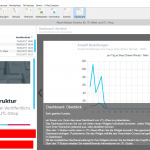

JTL-Wawi Fernsteuerung auf Windows-Server einrichten
Wenn mal als alleiniger Nutzer die kostenlose Warenwirtschaft JTL-Wawi einsetzen möchte, kommt man zunächst auf die Idee, sich einfach per Remote-Desktop (RDP) auf dem Windows-Rechner anzumelden, um so JTL zu nutzen. Doch diese JTL-Wawi Fernsteuerung hat zwei entscheidende Haken:
Warum JTL-Wawi auf einem gehosteten Windows-Server problematisch sein könnten?
Erstens ist die Verbindung per RDP auf einen Windows-Server per Microsoft-Lizenzbedingung für gewöhnlich nur für administrative Zwecke erlaubt. Es sei denn, man installiert einen Terminal-Server und die notwendigen Zugriffslizenzen. Das Problem ist aber, dass die Verwendung eines Terminal Servers auf Virtuellen Servern von Microsoft ebenfalls untersagt ist. Entweder man hat den Windows-Server also zuhause unter dem Tisch stehen oder man nutzt beim Hoster seiner Wahl die weitaus teureren Dedicated Root Server.
Zweitens ist die Verbindung per Remote-Desktop auf zwei gleichzeitige Zugriffe bzw. Administratoren beschränkt. Selbst wenn man also die Lizenzbedingungen ignoriert: Wer die Warenwirtschaft mit mehreren Anwendern nutzen will, wird ziemlich schnell ein Problem bekommen.
Die Lösung ist es, JTL Wawi lokal zu installieren und für den Zugriff auf den Windows-Server vorzubereiten. Im Folgenden werde ich die dazu notwendigen Einstellungen beschreiben.
Wie kann der Windows-Server eingerichtet werden, um JTL-Wawi den Zugriff von außen zu ermöglichen?
Auf einem gehosteten Windows-Server läuft ein Microsoft SQL Server. Die Anwender sollen auf ihren lokalen Windows-Rechnern die JTL Wawi nutzen, die sich mit dem entfernten Microsoft SQL-Server verbindet.
Porteinstellungen
Zunächst einmal bringen wir dem SQL Server bei, dass er auch auf der öffentlichen IP-Adresse erreichbar ist und welchen Port er dafür benutzen soll. Im SQL-Server-Configuration-Manager (SQLServerManager13.msc) muss dazu unterhalb der Netzwerk-Konfiguration “Protokolle für JTL-WAWI” ausgewählt werden. Dort befinden sich die Einstellungen für das Protokoll TCP/IP, die wir nun anpassen. Erstmal muss natürlich das Protokoll unter aktiviert werden: “Enabled: Ja”. Danach wird mit “Listen all: Ja” festgelegt, dass der SQL-Server über alle verfügbaren Netzwerkschnittstellen ansprechbar ist (siehe Microsoft-Doks). Wer den Server nur lokal verwendet, sollte diesen Schalter auf “Nein” setzen und die Einstellungen nur für die private, lokale IP-Adresse vornehmen.
Die entscheidende Einstellung befindet sich im Reiter “IP-Adressen”. Wenn zuvor “Listen all: Ja” eingestellt wurde, muss hier am Ende der Liste die Einstellung für “IPALL” angepasst werden. Hier genügt es, für TCP-Port einen beliebigen Port anzugeben. Der Standard-Port für Microsoft SQL ist 1433. Es empfiehlt sich, einen anderen Port zu wählen, damit der einfache Port-Scan nicht sofort auf die Idee kommt, dass hier ein MS-SQL-Dienst erreichbar ist.
[gallery ids=“1514,1512,1513”]
Benutzereinrichtung
Als nächstes geht es an die Einrichtung der Benutzer, für die JTL-Wawi Fernsteuerung erlaubt werden soll. Dazu wird im Microsoft SQL Management Studio (ssms.exe) entsprechende JTL-Datenbank geöffnet und unter Sicherheit per Rechtsklick auf Anmeldungen eine neue Anmeldung erstellt. Der Name ist natürlich frei wählbar. Das Passwort für die Anmeldung kann man eingeben, wenn man “SQL Server-Authentifizierung” auswählt. Natürlich empfiehlt es sich, entsprechend strenge Kennwort-Richtlinien zu verwenden. Unter “Benutzerrollen” muss der neue Benutzer nun noch der entsprechenden Datenbank zugewiesen und darauf Schreib- und Leserechte zugewiesen werden. Im Beispiel heißen diese Rollen db_reader und db_writer.
[gallery ids=“1516,1515”]
Firewall-Einstellung
Nun, da die Datenbank korrekt eingerichtet ist, muss die Firewall entsprechend geöffnet werden, um den Zugriff von außen zu ermöglichen. Die Windows-Firewall-Einstellungen erreichen wir über wf.msc. Dort wird eine neue eingehende Regel angelegt. Hier gibt es zwei Möglichkeiten: Entweder dem Microsoft SQL-Server wird generell der Kontakt zur Außenwelt genehmigt, oder wir öffnen nur den entsprechenden Port. Aus Sicherheitsgründen sollte die Einstellung allerdings so eng wie möglich gewählt werden. Wir wählen als Regeltyp also “Port” und geben dann den Port ein, den wir zu Beginn festgelegt haben. Unter “Aktion” muss natürlich “Verbindung zulassen” ausgewählt werden. Im nächsten Fenster “Profil” können alle Felder aktiviert bleiben. Die Regel soll ja vor allem für öffentliche Kommunikation erlauben. Abschließend kann noch ein Name für die Regel vergeben werden. Fertig.
[gallery ids=“1518,1517”]
Auf der Serverseite ist nun alles fertig eingerichtet. Als nächstes folgt die Einrichtung der JTL-Wawi auf dem lokalen Rechner.
JTL-Wawi einrichten
Nach dem Download und der Installation der Software wird uns diese beim ersten Start zur Datenbankverwaltung führen. Hier legen wir ein neues Profil mit einem wohlklingenden Namen an tragen die Adresse zu unserem Windows-Server ein, auf dem der Microsoft SQL-Server läuft. Wichtig ist, dass wir den oben konfigurierten Port hier mit einem Komma getrennt hinter die Server-Adresse eintragen. Als nächstes will das Programm von uns die vorher angelegten Zugangsdaten wissen. Wenn diese korrekt sind, erhalten wir nun eine Liste der Mandanten zur Auswahl und die Einrichtung der Software ist abgeschlossen.
[gallery ids=“1520,1519,1521”]
Fertig. Nun kann man die JTL-Wawi Fernsteuerung so nutzen, als würde man direkt auf dem Server arbeiten.
[caption id=“attachment_1527” align=“aligncenter” width=“150”] 
{kind=link}
Nachteile der JTL-Wawi Fernsteuerung
Die hier vorgestellte Konfiguration für die JTL-Wawi Fernsteuerung hat einen großen, entscheidenden Nachteil: Sie ist relativ unsicher. Zwar ist der Zugriff auf die Datenbank mit Benutzernamen und Passwort geschützt, dennoch gehört es nicht gerade zum guten Ton, die Datenbank öffentlich über das Internet erreichbar zu machen. Hier gibt es einige Möglichkeiten, sich besser zu schützen.
Entweder man richtet einen VPN-Tunnel ein, über den auf die Datenbank zugegriffen wird. Oder man hat die Möglichkeit, feste IP-Adressen zu vergeben, für den der Zugriff in der Windows-Firewall eingeschränkt werden kann. Ist auch das nicht möglich, sollte man wenigstens den IP-Adressbereich in der Windows-Firewall einrichten, dass er nur Zugriffe des jeweiligen Internet-Service-Providers (ISP) zulässt.